PPO4 the blow-up problem at small distance
Initally, I thought if we decrease the time step, then the blow-up problem can be resolved. But here new problems rises. When the ergodic trajectory gets closer and closer to a specific point on a po (here ppo4), we expect the angle decreases monotonically; however, as show below, it blows up at the bottom.
Contents
Load the data
All data comes from C++ simulation since collecting close approaches is computationally heavy. The initial conditions and Flouqet vectors are stored in HDF5 format.
ang = dlmread('angle'); ang = sin(acos(ang)); dis = dlmread('dis'); difv=dlmread('difv'); difv=difv'; No = dlmread('No'); index = dlmread('indexPo'); index = index + 1; % original index % starts from 0 h5file = '/usr/local/home/xiong/00git/c/data/ks22h001t120x64EV.h5'; ppType = 'ppo'; ppId = 4; np = 5; gTpos = 4; a0 = h5read(h5file, ['/' ppType '/' num2str(ppId) '/a']); nstp = h5read(h5file, ['/' ppType '/' num2str(ppId) '/nstp']); T = h5read(h5file, ['/' ppType '/' num2str(ppId) '/T']); %s = h5read(h5file, ['/' ppType '/' num2str(ppId) '/s']); veAll = h5read(h5file, ['/' ppType '/' num2str(ppId) '/ve']); h = T/nstp; aa = intg(a0, h, nstp, np); aa = aa(:,1:end-1); if(ppType == 'ppo') aa = half2whole(aa); veAll = half2whole(veAll); end [aaHat, ~] = orbitToSlice(aa); h1 = figure(); plot3(aaHat(1,:), aaHat(3,:), aaHat(4,:)); title('ppo4 projected to subspace $[a_1, a_2, b_2]$ on the 1st mode slice', ... 'Interpreter','latex')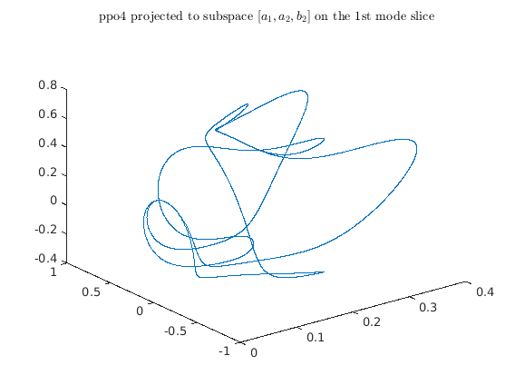
view indivisual incidence
Let's focus on a problematic incidence. The left figure below shows the angle-distance plot during this shadowing incidence. The right figure shows the distance, the indices of shadowed point on ppo4, the spacing between points on ppo4 and the magnitude of 1st mode on ppo4 for this shadowing part.
% get the start and end index of a problematic incidence %ix = 3; %ix = 155; ix = 104; x1=sum(No(1:ix))+1; x2=sum(No(1:ix+1)); h3 = figure(); loglog(dis(x1:x2), ang(x1:x2, 5), '.'); xlabel('$||\Delta x||_2$', 'Interpreter','latex'); ylabel('$\sin(\theta)$', 'Interpreter','latex'); title('distance-angle scattering plot', 'Interpreter','latex'); % plot the corresponding distance h4 = figure(); subplot(2,2,1); semilogy(dis(x1:x2)); % plot the distance grid on; subplot(2,2,2); plot(index(x1:x2)); % plot the corresponding index on po subplot(2,2,3); % calculate spacing spacing = zeros(x2-x1); for i = 1:x2-x1, spacing(i) = norm(aaHat(:, index(x1+i-1)) - aaHat(:, index(x1+i)) ); end semilogy(spacing) subplot(2,2,4); semilogy(aaHat(1, index(x1:x2)));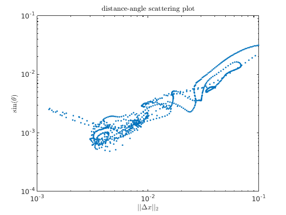 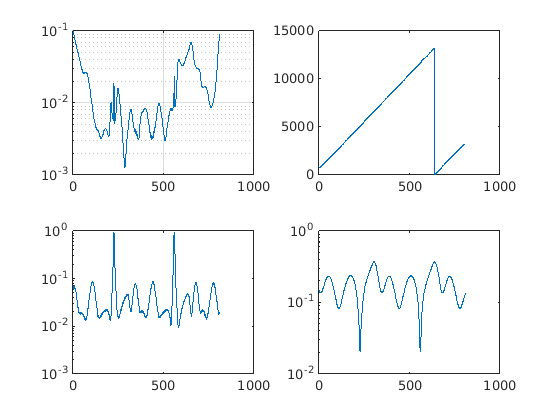
one single problematic point
The above figure shows that when distance goes below 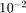, some scattering points blow up. Let's choose the leftmost point in the above figure 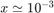 for consideration. First check that it is realy the minial distance between this ergodic point and ppo4. As shown in the figure below, we indeed find the point on ppo4 which is closest to this ergodic point. Denote the point on ppo4 and the ergodic point as 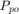 and 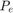 respectively.
[minDis, pid] = min(dis(x1:x2)); % get the index of smallest distance pid = pid - 1; disp([minDis, ang(x1+pid, 5), index(x1+pid)]); % confirm the index is correct pointPo = aaHat(:, index(x1+pid)); a0Ergo = pointPo + difv(:, x1+pid); % recover the ergodic point dif = repmat(a0Ergo, 1, 21) - aaHat(:, index(x1+pid)-10 : ... index(x1+pid)+10); nor = []; for i = 1:21, nor = [nor, norm(dif(:,i))]; end figure(); plot(nor, '-o');
0.00127565978134963 0.00251948354854097 6245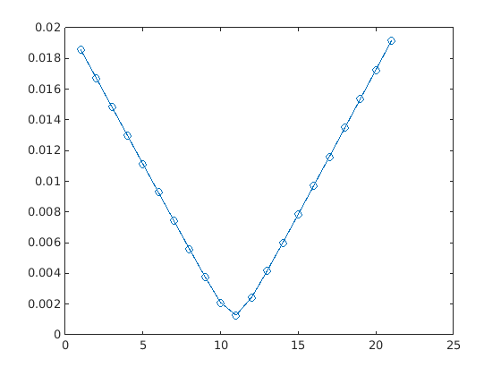
use smaller time step to integrate the ergodic trajectory
now, we decrease the integration time time to recalculate the ergodic trajectory, and try to find the new ergodic point 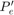 which has shortest distance to . As can be inferred in the following figure, and the printout, point and are very close to each other.
pointPo = aaHat(:, index(x1+pid-1)); a0Ergo = pointPo + difv(:, x1+pid-1); [aaErgo, ~] = intg2M1(a0Ergo, 0.001, 0.2); [N, M] = size(aaErgo); difNorm = zeros(M, 1); newDifv = zeros(N, M); for i = 1:M, newDifv(:,i) = aaErgo(:,i) - aaHat(:, index(x1+pid)); %pointPo; difNorm(i) = norm(newDifv(:,i)); end figure(); plot(difNorm); [newMinDis, minIndex] = min(difNorm); disp(newMinDis); oldDifv = difv(:, x1+pid); trueDifv = aaErgo(:, minIndex) - aaHat(:, index(x1+pid)); velocity = KSvelocity(aaHat(:, index(x1+pid))); velocity = veToSlice(velocity, aaHat(:, index(x1+pid))); figure() poincare = newDifv' * velocity; plot(poincare); hold on; scatter(minIndex, poincare(minIndex), 'r', 'filled'); disp(poincare(minIndex)); xlabel('index of points on ergodic trajectory'); ylabel('dot(velocity, difference vector)'); title('distance-angle scattering plot', 'Interpreter','latex'); % print out the first 10 components of old and new difference vectors disp([oldDifv(1:10), trueDifv(1:10)]);
0.00125933269470516
1.42111157788387e-05
0.000139100030517758 0.000170475014988292
-1.11022302462516e-16 -2.6208955884301e-21
0.00025810842815055 0.000325859114774452
-0.000598374197859915 -0.00047715133603372
0.000274843398530594 0.000346182102932746
4.99680781718137e-06 9.76711455882295e-05
-0.000848393741801456 -0.000914741456340129
-0.000388463138405959 -0.000265069639478199
0.000133145371070009 0.000124035479677154
-0.000394665364168656 -0.000337542184091157
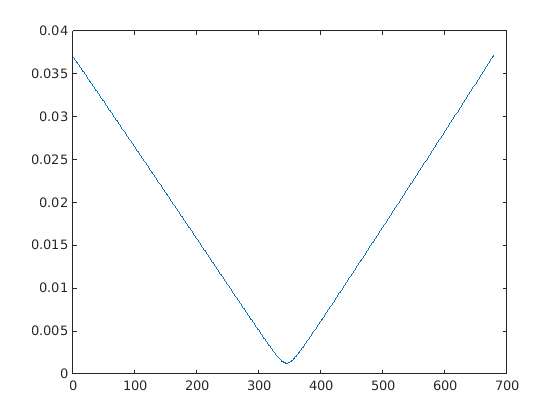 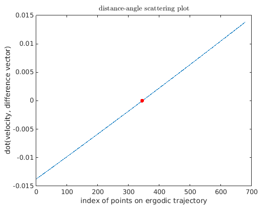 get the new difference vector
Now, we try to calculate the angle for the new difference vector. As shown below, the result improves (red dot), but not as good as our expectation.
% load Flouqet vectors ve = reshape(veAll(:, index(x1+pid)), 62, 30); ve = veToSlice(ve, aa(:, index(x1+pid)) ); % transform to slice ve = [ve(:,1:gTpos-1), ve(:, gTpos+1:end)]; % get rid of one % tangent direction oldAngle = sin( subspace( oldDifv, ve(:, 1:7)) ); newAngle = sin( subspace( trueDifv, ve(:, 1:7)) ); % print out the original angle and new angle disp([oldAngle, newAngle]); % plot the old point and new point % figure(); loglog(dis(x1:x2), ang(x1:x2, 5), '.'); hold on; scatter(dis(x1+pid), ang(x1+pid, 5), 'k', 'filled'); scatter(newMinDis, newAngle, 'r', 'filled');
0.00251948354841958 0.000928651287971773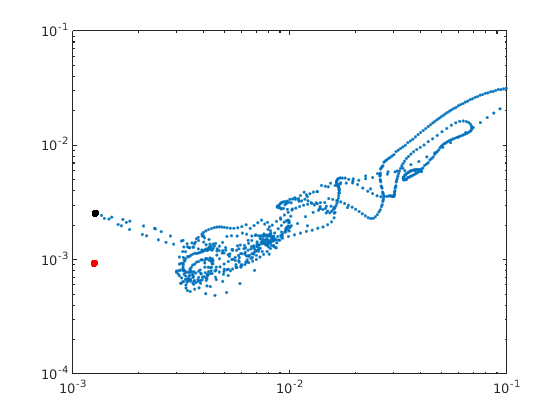
Try to look closer to the short segment will approach the secific point on ppo4
We can plot out the angle as the ergodic trajectory approaches the single point on ppo4. The top-left figure is the distance from the ergodic point to the specific point on ppo4 as time goes on. The top-right is the corresponding angle by using the first 8 Flouqet vectors. The bottom-left figure shows the angle by using 7 FVs. The bottom-right figure shows the angle by using 9 FVs. we expect angle decreases monotonically since the distance becomes smaller and smaller. However, it blows up at the minimal distance. That is very strange which confuses me.
tmpAng = zeros(M,3); for i = 1:M, tmpAng(i,1) = sin( subspace( newDifv(:,i), ve(:, 1:7)) ); tmpAng(i,2) = sin( subspace( newDifv(:,i), ve(:, 1:6)) ); tmpAng(i,3) = sin( subspace( newDifv(:,i), ve(:, 1:8)) ); end figure('position', [400, 400, 800, 700]); subplot(221); semilogy(difNorm); hold on; scatter(minIndex, difNorm(minIndex), 'r'); title('distance to a specific point on ppo4', 'Interpreter','latex'); subplot(222); semilogy(tmpAng(:, 1)); hold on; scatter(minIndex, tmpAng(minIndex, 1), 'r'); title('distance-angle scattering plot', 'Interpreter','latex'); subplot(223); semilogy(tmpAng(:,2)); hold on; scatter(minIndex, tmpAng(minIndex, 2), 'r'); title('distance-angle scattering plot', 'Interpreter','latex'); subplot(224); semilogy(tmpAng(:,3)); hold on; scatter(minIndex, tmpAng(minIndex, 3), 'r'); title('distance-angle scattering plot', 'Interpreter','latex'); figure('position', [400, 400, 500, 300]); plot(newDifv(:, minIndex)); title('profile of the difference vector', 'Interpreter','latex');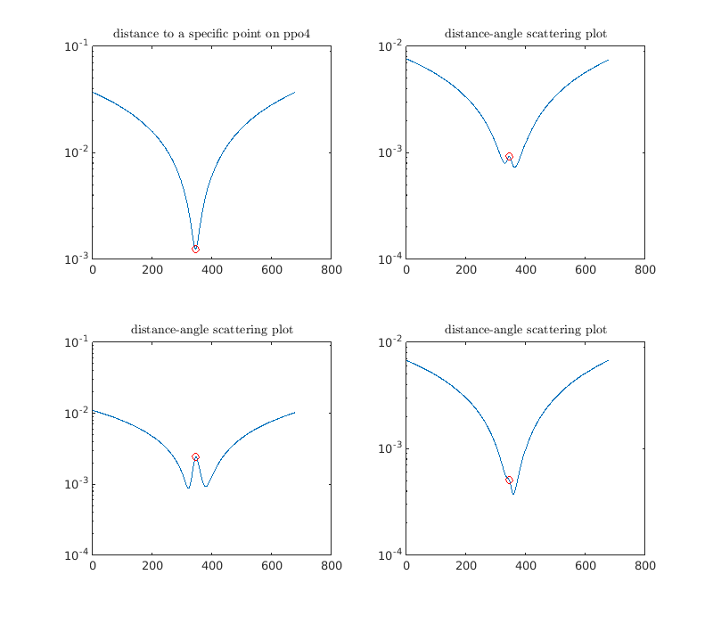 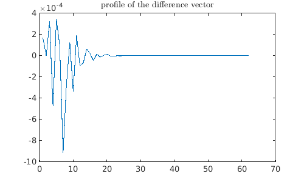
This happens to other instances too
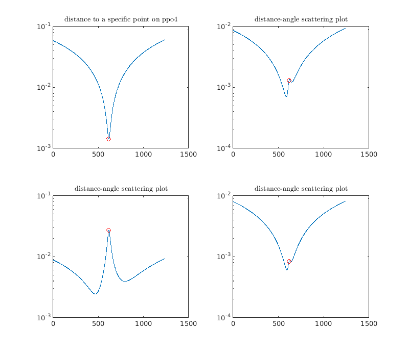
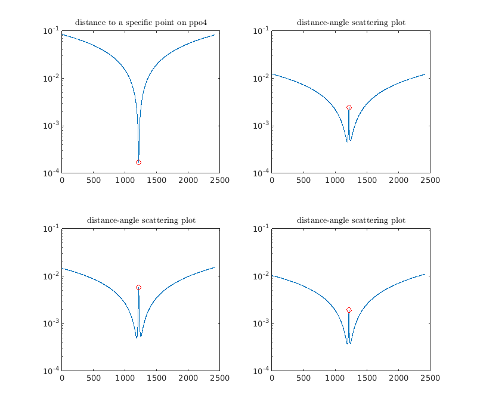
%} %{ %% apply this method to all the shadowing points of the above shadowing instances % The following figure shows the new distance-angle scattering plot % compared to the above figure. The part with large difference % vector does not change too much. Only the small-distance part % changes within our expectation. subsp = 3:9; % the number of Floquet vectors to span the subspace Nsubsp = length(subsp); newAngle = zeros(x2-x1, Nsubsp); % new angle newDis = zeros(x2-x1, 1); % new distance trueDifv = refineDifv(difv(:, x1:x2), aaHat, index(x1:x2), 0.1, 0.001); for i=1:x2-x1, ve = h5read(h5file, ['/' ppType '/' num2str(ppId) '/ve'], [1, index(i+x1)], ... [30*62,1]); ve = reshape(ve, 62, 30); ve = veToSlice(ve, aa(:, index(i+x1)) ); % transform to slice ve = [ve(:,1:gTpos-1), ve(:, gTpos+1:end)]; % get rid of one % tangent direction newDis(i) = norm(trueDifv(:, i)); for j = 1:Nsubsp, newAngle(i, j) = sin( subspace( trueDifv(:, i), ve(:, 1:subsp(j))) ); end end figure(); loglog(newDis, newAngle(:, 5), 'b.'); hold on; loglog(newDis, newAngle(:, 6), 'g.'); xlabel('$||\Delta x||_2$', 'Interpreter','latex'); ylabel('$\sin(\theta)$', 'Interpreter','latex'); title('distance-angle scattering plot', 'Interpreter','latex'); %% apply this method to all shadowing incidences Ninc = length(No); % number of incidences newAngle = []; % new angle newDis = []; % new distance for ix = 1:Ninc, %for ix = 10:10, if(mod(ix, 1) == 0) fprintf('******* ix = %d ******** \n', ix); end x1 = sum(No(1:ix))+1; x2=sum(No(1:ix+1)); tmpAngle = zeros(x2-x1, Nsubsp); tmpDis = zeros(x2-x1, 1); trueDifv = refineDifv(difv(:, x1:x2), aaHat, index(x1:x2), 0.1, 0.001); for i = 1:x2-x1, ve = h5read(h5file, ['/' ppType '/' num2str(ppId) '/ve'], ... [1, index(i+x1)], [30*62,1]); ve = reshape(ve, 62, 30); ve = veToSlice(ve, aa(:, index(i+x1)) ); % transform to slice ve = [ve(:,1:gTpos-1), ve(:, gTpos+1:end)]; % get rid of one % tangent direction tmpDis(i) = norm(trueDifv(:,i)); for j = 1:Nsubsp, tmpAngle(i, j) = sin( subspace( trueDifv(:, i), ve(:, 1:subsp(j))) ); end end newAngle = [newAngle; tmpAngle]; newDis = [newDis; tmpDis]; end figure(); loglog(newDis, newAngle(:, 5), '.'); %}